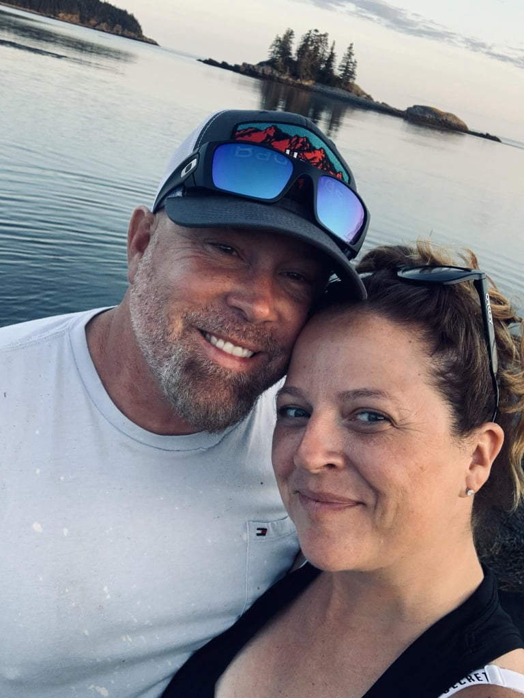
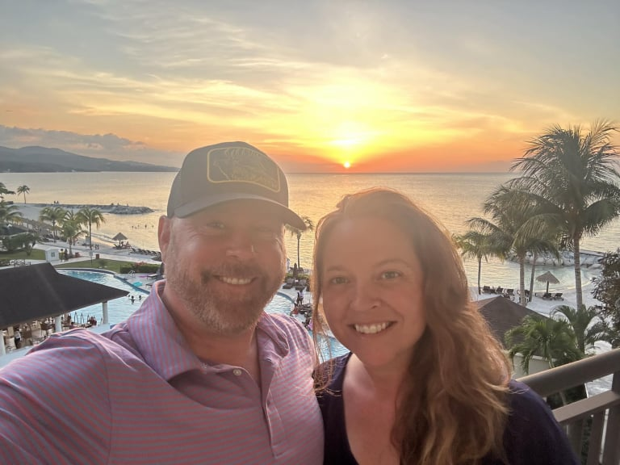

I’m a physical therapist, a small business owner, a bison farmer, and I currently serve as a Selectman in Lubec.
But first and foremost, I'm a family man. I'm a husband and father to four wonderful, children. For me, family is why I'm running. It’s the center of my life and the foundation of every decision I make. As a husband and a father, I think constantly about the realities families are up against: rising heating costs, higher property taxes, finding and keeping reliable employment, maintaining safe communities, and protecting the traditions that define rural Maine. When I look at public policy, I measure it against one simple question: does this make life more secure and sustainable for Maine families?
Serving as a Lubec Selectman and as a member of the Washington County Budget Advisory Committee has reinforced my belief that government works best when it stays close to the people. At the local level, decisions aren’t abstract... These policies affect taxpayers, families, and small businesses immediately. I’ve seen how important it is to listen carefully and to respect the distinct needs of rural communities.
I’m running for the State Legislature because decisions made in Augusta increasingly shape the future of rural Maine families without enough input from the people who live and work here. I believe it’s time to restore balance, defend local control, and prioritize policies that strengthen families rather than burden them.